EDA, Clustering y Modelado Predictivo de Causa de Muerte
a partir de registros del Instituto Nacional de Estadística (INE)
Guatemala registra cada año sus estadísticas vitales de defunciones a través del INE. Para este proyecto se consolidaron los archivos anuales en formato SPSS (.sav) de 2013 a 2022, resultando en un único dataset de:
Cada fila corresponde a una defunción e incluye información como la causa de muerte en código CIE-10, edad, sexo, departamento, municipio, ocupación, escolaridad y fecha de ocurrencia.
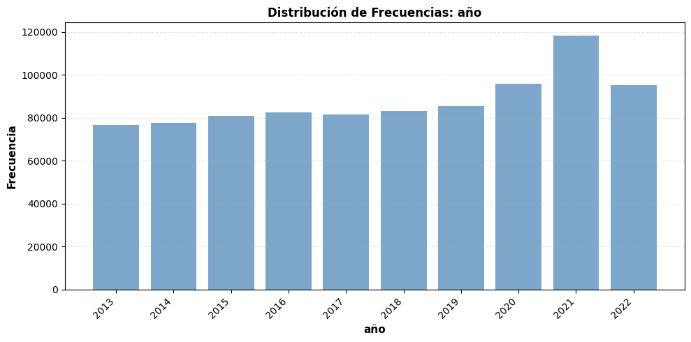
Registros de defunciones por año. Se observa el fuerte aumento en 2020–2021 producto de la pandemia de COVID-19. Celda 15
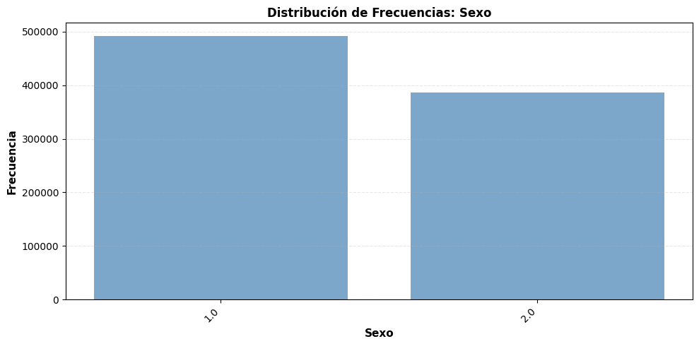
Distribución por sexo. Los hombres representan consistentemente más del 60 % de las defunciones. Celda 15
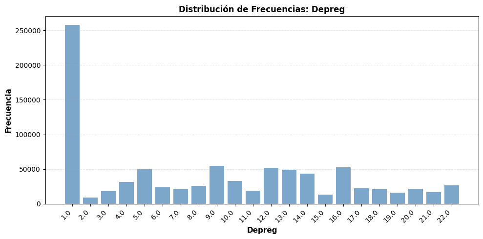
Defunciones por departamento. Guatemala (capital) y Huehuetenango concentran los mayores volúmenes. Celda 15
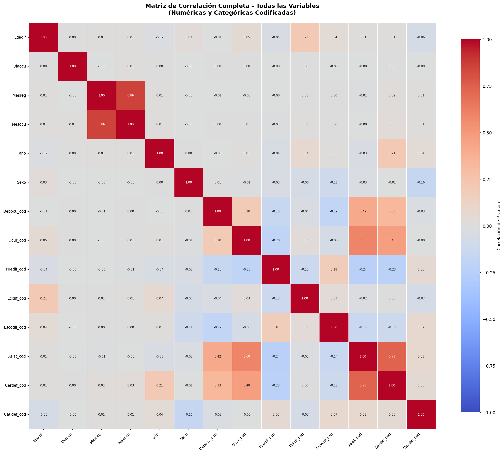
Matriz de correlación entre variables numéricas del dataset. Celda 18
Pregunta: ¿La curva de mortalidad de los hombres muestra un "pico anómalo" entre los 18 y 35 años que no aparece en las mujeres?
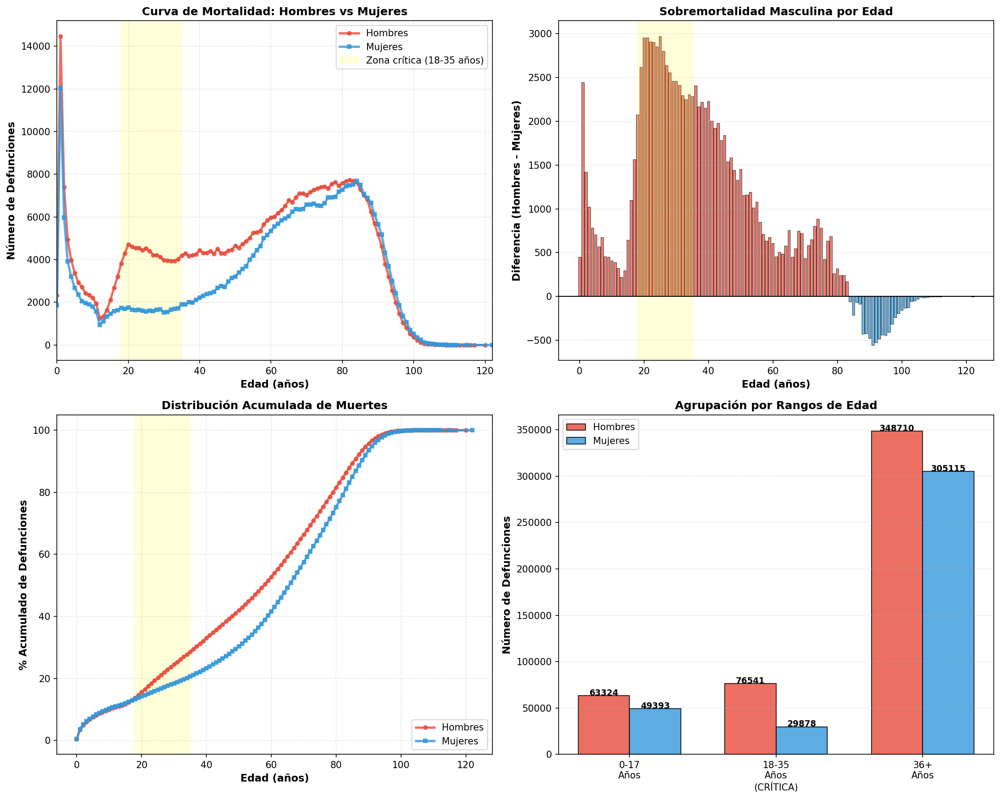
Curva de mortalidad por edad separada por sexo. El eje X es la edad; el eje Y muestra el número de defunciones acumuladas en los 10 años. Celda 23
Pregunta: ¿Los departamentos de la Región Metropolitana y Oriente tienen porcentajes de muertes por causas externas significativamente más altos?
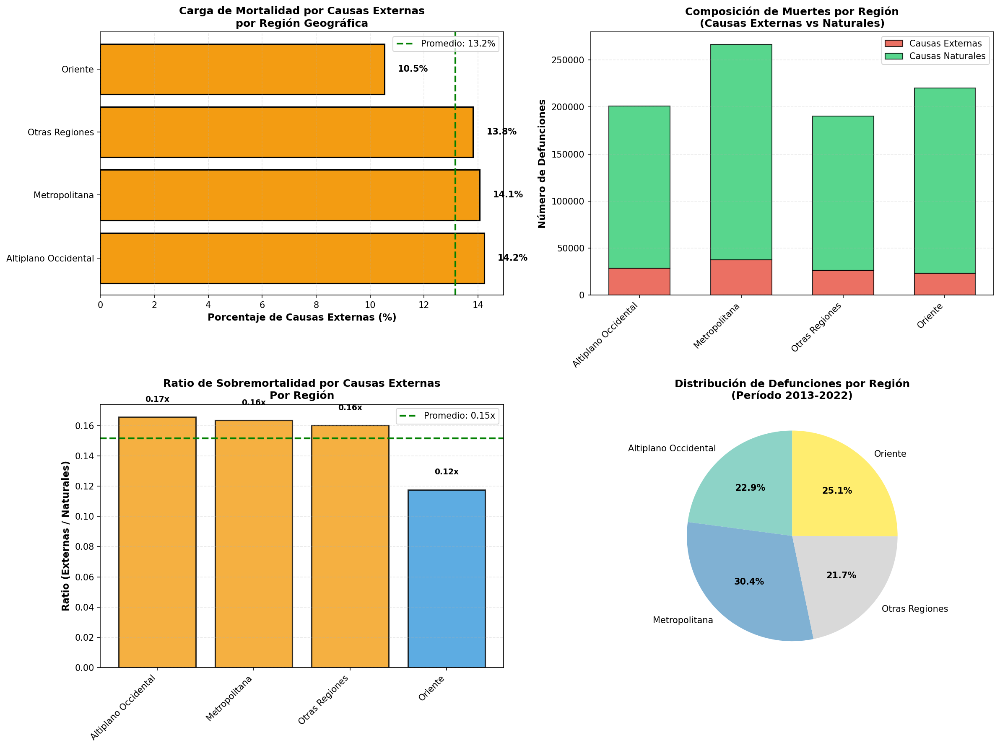
Porcentaje de muertes por causas externas por región geográfica de Guatemala. Celda 27
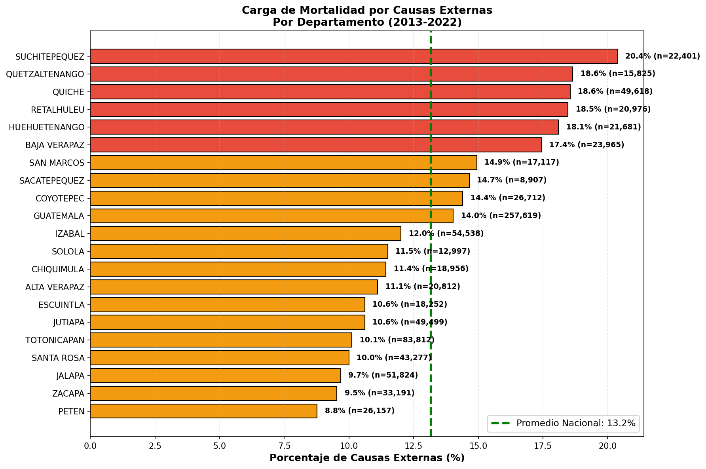
Ranking de departamentos por carga de causas externas. Los colores más oscuros indican mayor proporción de muertes violentas. Celda 29
Pregunta: ¿La mortalidad en menores de 5 años sigue dominada por enfermedades infecciosas y nutricionales?
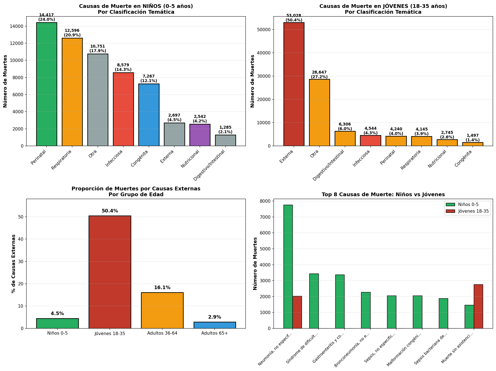
Comparación de patrones de mortalidad: niños (0–5 años) vs. adultos jóvenes (18–35 años). Los paneles muestran la distribución de causas de muerte en cada grupo etario. Celda 33
Pregunta: ¿Los sábados y domingos registran más muertes por causas externas que los días laborales?
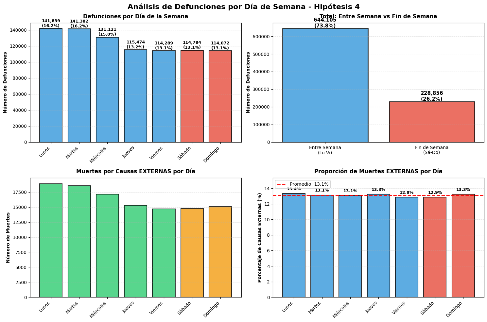
Patrones de mortalidad por día de la semana, separados por tipo de causa. Los subplots muestran distintas categorías de defunción. Celda 39
Pregunta: ¿Los años 2020 y 2021 muestran un exceso de mortalidad visible y un desplazamiento hacia causas respiratorias?
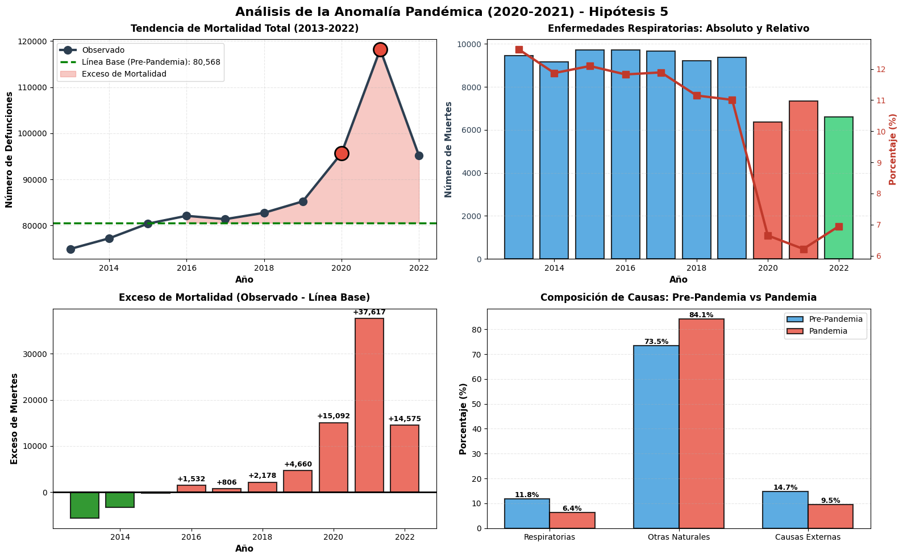
Visualización del impacto pandémico. Los cuatro paneles muestran: exceso de mortalidad total, evolución de causas respiratorias, comparativa de meses críticos y tendencia anual. Celda 44
Tras validar las 5 hipótesis, se aplicó un algoritmo de K-Means para identificar automáticamente grupos de defunciones con perfiles similares, sin usar etiquetas predefinidas.
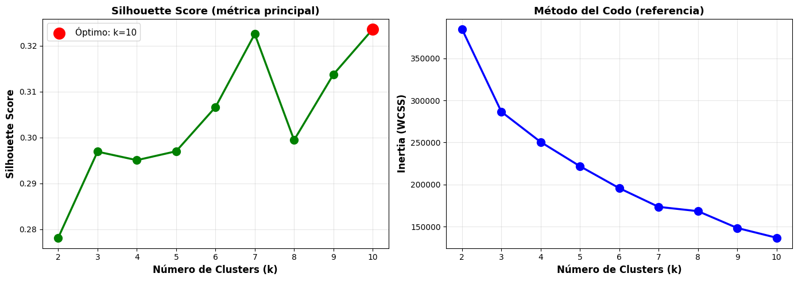
Método del codo (Elbow Method): inercia del modelo en función del número de clusters k. El "codo" marca el punto donde agregar más clusters ya no reduce significativamente la varianza interna. Celda 49
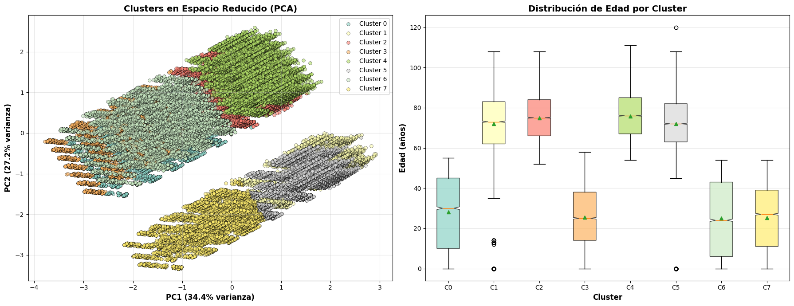
Proyección PCA de los clusters K-Means. Cada punto es una defunción; el color indica el cluster asignado. Celda 52
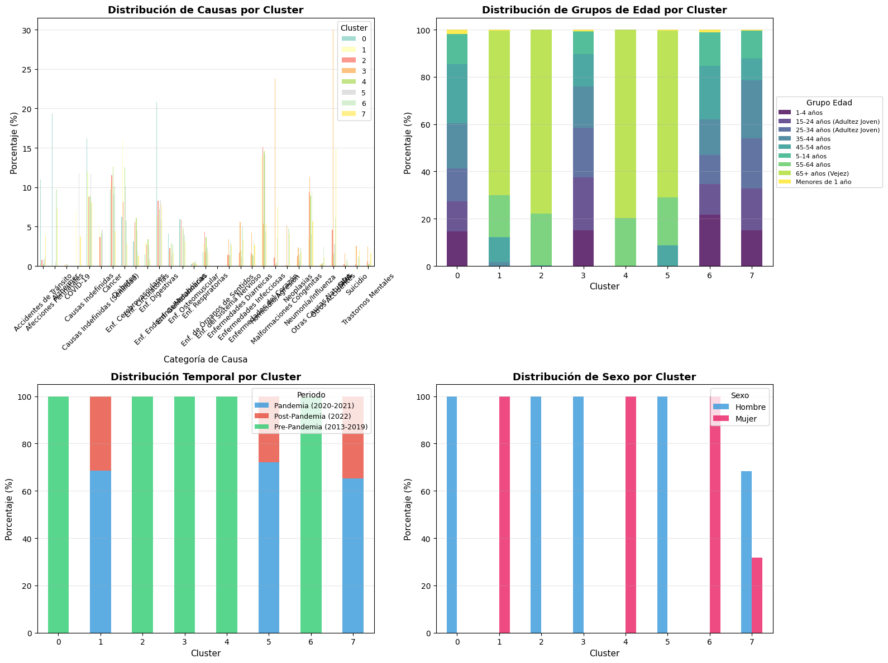
Perfil demográfico de cada cluster: distribución de edad, sexo y causa por grupo. Celda 52
Caudef) se excluye completamente de los inputs para evitar fuga de información.
El dataset contiene 34 categorías CIE-10 distintas. Entrenar directamente con 34 clases produce un Balanced Accuracy de apenas ~0.22 porque muchas comparten el mismo perfil demográfico (ej: Hipertensiva, Isquémica del corazón y Cerebrovascular afectan todas a adultos mayores de ambos sexos).
La solución: consolidar en 9 macro-grupos epidemiológicamente coherentes, donde cada grupo tenga un perfil demográfico diferenciado que el modelo pueda aprender.
| Macro-grupo | Clases CIE-10 incluidas | Perfil demográfico |
|---|---|---|
| Cardiovasculares | Hipertensiva, Isquémica, Cerebrovascular, Otras circulatorias | Adultos mayores, ambos sexos |
| Causas externas | Homicidio, Accidentes de tránsito, Suicidio, Accidentes no intencionales | Hombres jóvenes (18–35) |
| Infecciosas/Respiratorias | Infecciosas, Neumonía/influenza, EPOC, Otras respiratorias | Niños y adultos mayores |
| Endocrinas/Metabólicas | Diabetes y trastornos metabólicos | Adultos >40, mayor en mujeres |
| Digestivas/Genitourinarias | Cirrosis hepática, Nefritis, Apendicitis, Otras digestivas | Adultos medios, hombres (cirrosis) |
| Neoplasias | Cáncer, Sangre e inmunidad | Adultos mayores, ambos sexos |
| Materno/Perinatal | Perinatales, Congénitas, Embarazo/parto | Recién nacidos y mujeres en edad reproductiva |
| Mal definidas | R98 (sin asistencia), R99 (causa no especificada), Senilidad, Síntomas inespecíficos | Perfil mixto, señal de calidad del dato |
| Otras | Nervioso, Trastornos mentales, Otros capítulos | Heterogéneo |
Antes de entrenar cualquier modelo, se verificó que cada variable tiene asociación estadísticamente significativa con la variable objetivo. Para las variables categóricas se usó el test Chi-cuadrado (χ²):
| Variable | Estadístico χ² | p-valor | Conclusión |
|---|---|---|---|
| Escolaridad | 75 586 | 0.000 | ✓ Muy alta asociación |
| Ocupación | 55 249 | 0.000 | ✓ Muy alta asociación |
| Departamento | 39 597 | 0.000 | ✓ Alta asociación |
| Sexo | 20 044 | 0.000 | ✓ Alta asociación |
| Estado civil | 19 628 | 0.000 | ✓ Alta asociación |
Un p-valor de 0.000 significa que la probabilidad de que la asociación sea aleatoria es prácticamente nula. Todas las variables tienen asociación significativa con la causa de muerte.
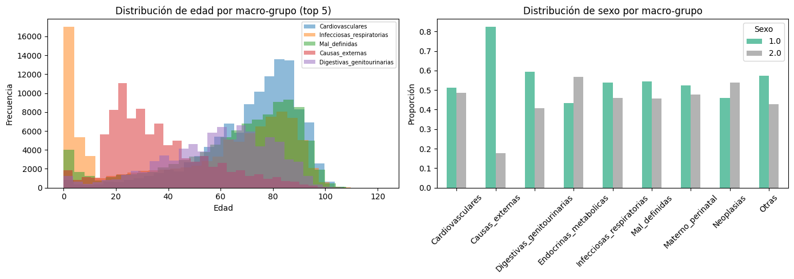
Izquierda: distribución de edad para los 5 macro-grupos más frecuentes. Las curvas tienen formas muy distintas: Materno/Perinatal se concentra en edad 0, Cardiovasculares en adultos mayores, Causas Externas en adultos jóvenes. Derecha: proporción de sexo por macro-grupo — Causas Externas tiene ~75% hombres mientras Materno/Perinatal es casi 100% femenino. Celda 41
El dataset se dividió en dos particiones exclusivas:
Se usó muestreo estratificado (stratify=y_macro), lo que garantiza que la proporción de cada macro-grupo sea idéntica en entrenamiento y prueba. Esto es fundamental cuando las clases están desbalanceadas (ej: Otras tiene solo 3.2 % del total).
| Tipo de variable | Variables | Transformaciones |
|---|---|---|
| Numéricas | edad, mes, día, año, es_fin_semana | SimpleImputer (mediana) → StandardScaler |
| Categóricas | sexo, departamento, municipio, estado civil, escolaridad, ocupación, grupo_edad | SimpleImputer (moda) → OneHotEncoder |
Feature engineering: se creó la variable grupo_edad que agrupa la edad en 5 rangos epidemiológicamente significativos:
Caudef (código CIE-10 original, fuente directa de la etiqueta) está completamente excluida del modelo. Si se incluyera, el modelo "aprendería" la respuesta directamente desde su origen, invalidando el ejercicio.
Se evaluaron 5 algoritmos, todos dentro de un Pipeline (preprocesamiento + clasificador) para garantizar que no haya fuga de datos entre folds de CV. El barrido de hiperparámetros usa una muestra estratificada de 60 000 registros del conjunto de entrenamiento para mayor velocidad; el modelo ganador se reentrena sobre el 100 % del train.
La regresión logística multinomial es lineal: traza un hiperplano de decisión en el espacio de features. Su rol es establecer un piso de referencia: si los modelos complejos no la superan, algo está mal.
| Métrica | Valor en Test |
|---|---|
| Accuracy | 0.3568 |
| Balanced Accuracy | 0.3618 |
| Macro F1 | 0.3293 |
Sorprendentemente, la LR obtiene mejores métricas que el Árbol de Decisión. Esto se debe a que el preprocesamiento OneHotEncoder convierte las variables en un espacio de alta dimensionalidad donde los hiperplanos lineales pueden capturar parte de la estructura.
Se probaron 3 configuraciones variando la profundidad máxima del árbol y el criterio de split:
| Config | max_depth | min_samples_leaf | criterion | CV Bal-Acc | Std |
|---|---|---|---|---|---|
| DT-v2 (medium) ✓ | 10 | 5 | gini | 0.3154 | ±0.0038 |
| DT-v1 (shallow) | 5 | 10 | gini | 0.3144 | ±0.0030 |
| DT-v3 (deep) | 20 | 1 | entropy | 0.2650 | ±0.0057 |
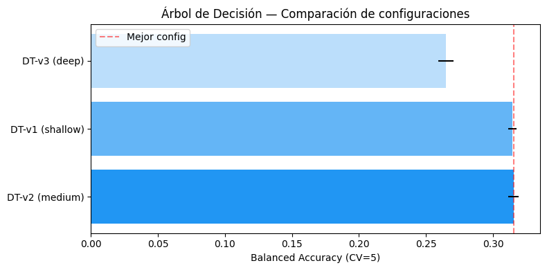
Comparación de las 3 configuraciones del Árbol de Decisión en CV=5. La barra roja indica la mejor configuración; las barras de error muestran la variabilidad entre folds. Celda 27
Resultado en test (config v2): Balanced Accuracy = 0.3203, Macro F1 = 0.2991
Random Forest entrena múltiples árboles sobre subconjuntos aleatorios de datos y features, luego vota por mayoría. Es más robusto que un solo árbol porque el ruido de cada árbol se cancela en el conjunto.
| Config | n_estimators | max_depth | CV Bal-Acc | Std |
|---|---|---|---|---|
| RF-v3 (sin límite) ✓ | 200 | None | 0.3539 | ±0.0025 |
| RF-v2 (depth=20) | 100 | 20 | 0.3496 | ±0.0029 |
| RF-v1 (depth=10) | 50 | 10 | 0.3310 | ±0.0042 |
Resultado en test (RF-v3): Accuracy = 0.3760, Balanced Accuracy = 0.3760, Macro F1 = 0.3428
XGBoost (eXtreme Gradient Boosting) construye los árboles de forma secuencial: cada nuevo árbol corrige los errores del anterior. Es generalmente el algoritmo más potente en datasets tabulares y ganó múltiples competencias de Kaggle.
| Config | n_estimators | max_depth | learning_rate | CV Bal-Acc | Std |
|---|---|---|---|---|---|
| XGB-v2 (medium) ✓ | 200 | 6 | 0.05 | 0.3569 | ±0.0021 |
| XGB-v1 (light) | 100 | 4 | 0.10 | 0.3503 | ±0.0020 |
| XGB-v3 (deep) | 300 | 8 | 0.01 | 0.3473 | ±0.0023 |
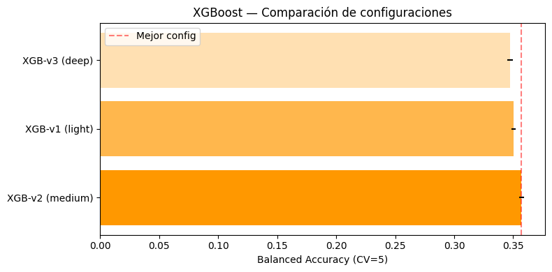
Comparación de las 3 configuraciones de XGBoost en CV=5. XGB-v2 (200 estimadores, profundidad 6, lr=0.05) es el ganador claro. Celda 34
class_weight='balanced', por lo que en el test con 175K registros su sesgo hacia clases mayoritarias se amplifica. Esto se confirma comparando su accuracy bruta (0.3878, la más alta de todos) con su balanced accuracy (0.3633, tercera): predice bien las clases grandes a costa de las minoritarias como Otras y Digestivas.
Resultado en test (XGB-v2): Accuracy = 0.3878, Balanced Accuracy = 0.3633, Macro F1 = 0.3343
CatBoost es un algoritmo de gradient boosting desarrollado por Yandex, optimizado específicamente para datos con variables categóricas. Sus ventajas clave:
auto_class_weights='Balanced': ajusta automáticamente el peso de cada clase según su frecuencia, compensando el desbalanceo| Parámetro | Valor | Justificación |
|---|---|---|
| iterations | 500 | Número de árboles — suficiente para convergencia sin exceso |
| learning_rate | 0.10 | Tasa de aprendizaje estándar para boosting |
| depth | 6 | Profundidad balanceada (no superficial, no excesiva) |
| auto_class_weights | Balanced | Penaliza proporcionalmente las clases minoritarias |
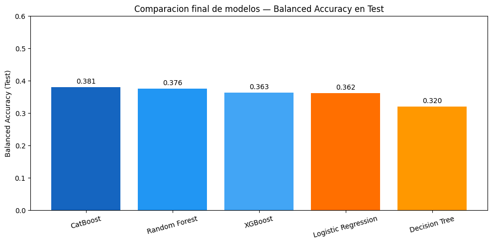
Balanced Accuracy en el conjunto de prueba (175 628 registros) para los 5 modelos. CatBoost lidera con 0.3809. Celda 43
| Modelo | Test Accuracy | Test Balanced Accuracy | Test Macro F1 |
|---|---|---|---|
| CatBoost ★ | 0.3770 | 0.3809 | 0.3484 |
| Random Forest | 0.3760 | 0.3760 | 0.3428 |
| XGBoost | 0.3878 | 0.3633 | 0.3343 |
| Logistic Regression | 0.3568 | 0.3618 | 0.3293 |
| Decision Tree | 0.3504 | 0.3203 | 0.2991 |
La matriz de confusión muestra qué clases predice correctamente el modelo y con cuáles se confunde. Cada fila representa la clase real; cada columna, la predicción. Los valores en la diagonal son los aciertos (recall por clase). Los valores fuera de la diagonal son confusiones.
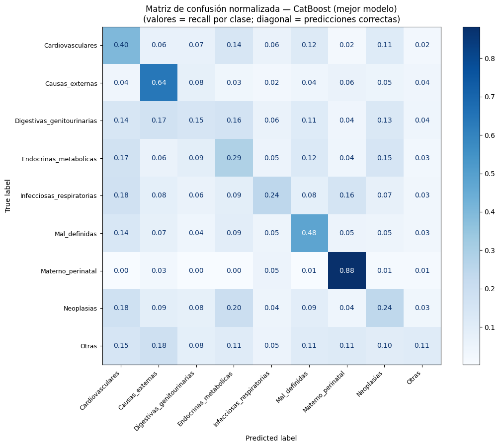
Matriz de confusión normalizada por fila del modelo CatBoost. Los valores en la diagonal representan el recall de cada clase (fracción de registros de esa clase predichos correctamente). Celda 45
| Macro-grupo | Recall | Interpretación epidemiológica |
|---|---|---|
| Materno_perinatal | 0.882 | Recién nacidos tienen edad≈0; señal demográfica inequívoca que ningún otro grupo comparte |
| Causas_externas | 0.640 | Hombres jóvenes (18–35) con pico claro; el sexo+edad identifica bien este grupo |
| Mal_definidas | 0.480 | Códigos R agrupados con señal demográfica moderada (senilidad sí tiene perfil etario) |
| Cardiovasculares | 0.400 | Adultos mayores, ambos sexos; competencia con Endocrinas y Neoplasias |
| Endocrinas_metabólicas | 0.286 | Perfil muy similar al cardiovascular — difícil de separar con solo demografía |
| Infecciosas_respiratorias | 0.244 | Afecta tanto a niños como a adultos mayores — señal etaria ambigua |
| Neoplasias | 0.240 | Adultos mayores, perfil muy solapado con cardiovasculares |
| Digestivas_genitourinarias | 0.147 | Sin señal demográfica fuerte — el modelo tiene dificultad estructural aquí |
| Otras | 0.109 | Clase residual heterogénea — la baja predicción es esperable por diseño |
La feature importance muestra cuánto contribuye cada variable a las predicciones del modelo. Un valor alto indica que esa variable divide bien el espacio de clases.
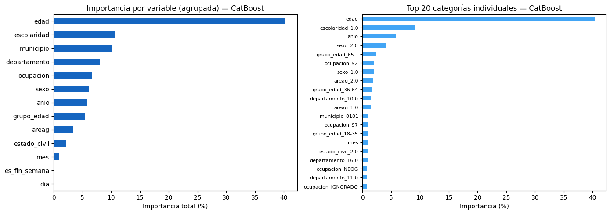
Izquierda: importancia agrupada por variable original. Derecha: top 20 categorías individuales más discriminativas. Celda 46
auto_class_weights='Balanced').Areag (urbano/rural) y Ocur (lugar de ocurrencia) podrían mejorar el rendimiento, especialmente para separar causas externas (vía pública) de maternas (hospital).